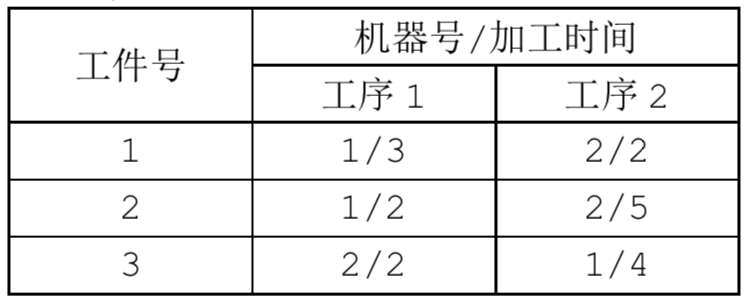
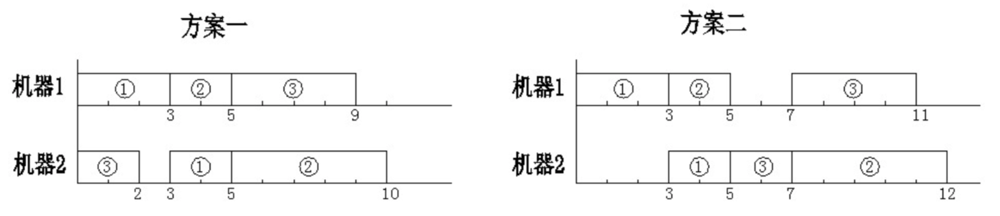

我们现在要利用 $m$ 台机器加工 $n$ 个工件，每个工件都有 $m$ 道工序，每道工序都在不同的指定的机器上完成。每个工件的每道工序都有指定的加工时间。
每个工件的每个工序称为一个操作，我们用记号 $j-k$ 表示一个操作，其中 $j$ 为 $1$ 到 $n$ 中的某个数字，为工件号；$k$ 为 $1$ 到 $m$ 中的某个数字，为工序号，例如 2-4 表示第 $2$ 个工件第 $4$ 道工序的这个操作。在本题中，我们还给定对于各操作的一个安排顺序。
例如，当 $n=3，m=2$ 时，“1-1，1-2，2-1，3-1，3-2，2-2” 就是一个给定的安排顺序，即先安排第 $1$ 个工件的第 $1$ 个工序，再安排第 $1$ 个工件的第 $2$ 个工序，然后再安排第 $2$ 个工件的第 $1$ 个工序，等等。
一方面，每个操作的安排都要满足以下的两个约束条件。
(1) 对同一个工件，每道工序必须在它前面的工序完成后才能开始；
(2) 同一时刻每一台机器至多只能加工一个工件。
另一方面，在安排后面的操作时，不能改动前面已安排的操作的工作状态。
由于同一工件都是按工序的顺序安排的，因此，只按原顺序给出工件号，仍可得到同样的安排顺序，于是，在输入数据中，我们将这个安排顺序简写为 “1 1 2 3 3 2”。
还要注意，“安排顺序”只要求按照给定的顺序安排每个操作。不一定是各机器上的实际操作顺序。在具体实施时，有可能排在后面的某个操作比前面的某个操作先完成。
例如，取 $n=3,m=2$，已知数据如下：

则对于安排顺序 “1 1 2 3 3 2”，下图中的两个实施方案都是正确的。但所需要的总时间分别是 10 与 12。

当一个操作插入到某台机器的某个空档时（机器上最后的尚未安排操作的部分也可以看作一个空档），可以靠前插入，也可以靠后或居中插入。为了使问题简单一些，我们约定：在保证约束条件（1）（2）的条件下，尽量靠前插入。并且，我们还约定，如果有多个空档可以插入，就在保证约束条件（1）（2）的条件下，插入到最前面的一个空档。于是，在这些约定下，上例中的方案一是正确的，而方案二是不正确的。
显然，在这些约定下，对于给定的安排顺序，符合该安排顺序的实施方案是唯一的，请你计算出该方案完成全部任务所需的总时间。
 Comet OJ
Comet OJ